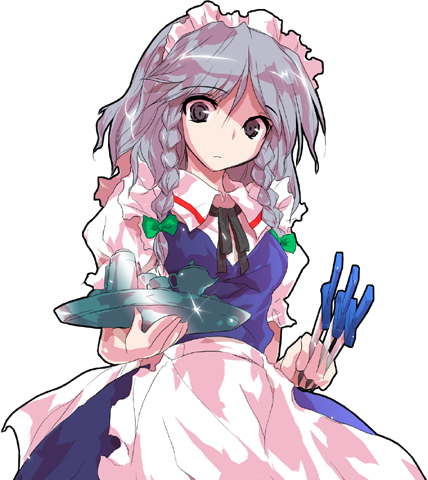

十六夜咲夜 이자요이 사쿠야
キャラクター 캐릭터
紅魔館の完全で瀟洒なメイド長。冷静で丁寧。レミリアは「お嬢様」。美鈴にだけくだけた口調です。
홍마관의 완벽하고 세련된 메이드장. 침착하고 정중합니다. 레밀리아는 「お嬢様」. 메이링에게만 편한 말투입니다.
サンプル4（Hikari） 1:41〜2:03
샘플 4 (Hikari) 1:41〜2:03
台詞 대사
掛け声 기합 (14)
| No | ファイル名 | 状況 상황 | 台詞 | 読み | 意味 뜻 |
|---|---|---|---|---|---|
| 1 | vo_sakuya_eff_l_01 | 弱攻撃の掛け声 약공격 기합 | ふっ！ | ふっ | 흡! |
| 2 | vo_sakuya_eff_l_02 | 弱攻撃の掛け声 약공격 기합 | はっ！ | はっ | 핫! |
| 3 | vo_sakuya_eff_l_03 | 弱攻撃の掛け声 약공격 기합 | しっ！ | しっ | 슷! |
| 4 | vo_sakuya_eff_l_04 | 弱攻撃の掛け声 약공격 기합 | せいっ！ | せいっ | 세잇! |
| 5 | vo_sakuya_eff_h_01 | 強攻撃の掛け声 강공격 기합 | はあっ！ | はあっ | 하앗! |
| 6 | vo_sakuya_eff_h_02 | 強攻撃の掛け声 강공격 기합 | やあっ！ | やあっ | 야앗! |
| 7 | vo_sakuya_eff_h_03 | 強攻撃の掛け声 강공격 기합 | せやっ！ | せやっ | 세얏! |
| 8 | vo_sakuya_eff_h_04 | 強攻撃の掛け声 강공격 기합 | ふんっ！ | ふんっ | 흥! |
| 9 | vo_sakuya_eff_w_01 | 強攻撃のひとこと 강공격 한마디 | 遅い。 | おそい | 느려요. |
| 10 | vo_sakuya_eff_w_02 | 強攻撃のひとこと 강공격 한마디 | 無駄です。 | むだです | 소용없어요. |
| 11 | vo_sakuya_eff_w_03 | 強攻撃のひとこと 강공격 한마디 | 甘いですね。 | あまいですね | 안이하네요. |
| 12 | vo_sakuya_eff_w_04 | 強攻撃のひとこと 강공격 한마디 | 見えています。 | みえています | 다 보여요. |
| 13 | vo_sakuya_eff_s_01 | ジャンプ・ダッシュの小さな息 점프·대시 숨소리 | ふっ | ふっ | 흣 |
| 14 | vo_sakuya_eff_s_02 | ジャンプ・ダッシュの小さな息 점프·대시 숨소리 | すっ | すっ | 슥 |
必殺技 필살기 (10)
| No | ファイル名 | 状況 상황 | 台詞 | 読み | 意味 뜻 |
|---|---|---|---|---|---|
| 15 | vo_sakuya_Special1_01 | 必殺技1（技名） 필살기 1 (기술 이름) | バウンスノーバウンス！ | ばうんすのーばうんす | 바운스 노 바운스! |
| 16 | vo_sakuya_Special1_02 | 必殺技1（ひとこと） 필살기 1 (한마디) | 逃げ場はありません。 | にげばは ありません | 도망칠 곳은 없어요. |
| 17 | vo_sakuya_Special2_01 | 必殺技2（技名） 필살기 2 (기술 이름) | 奇術「ミスディレクション」！ | きじゅつ みすでぃれくしょん | 기술, 미스디렉션! |
| 18 | vo_sakuya_Special2_02 | 必殺技2（ひとこと） 필살기 2 (한마디) | こちらです。 | こちらです | 이쪽입니다. |
| 19 | vo_sakuya_Special3_01 | 必殺技3（技名） 필살기 3 (기술 이름) | ダンシングスターソード！ | だんしんぐすたーそーど | 댄싱 스타 소드! |
| 20 | vo_sakuya_Special3_02 | 必殺技3（ひとこと） 필살기 3 (한마디) | 頭上注意です。 | ずじょう ちゅういです | 머리 위 조심하세요. |
| 21 | vo_sakuya_Special6_01 | 必殺技6（技名） 필살기 6 (기술 이름) | ルミナスリコシェ！ | るみなすりこしぇ | 루미너스 리코셰! |
| 22 | vo_sakuya_Special6_02 | 必殺技6（ひとこと） 필살기 6 (한마디) | 足元にご注意を。 | あしもとに ごちゅういを | 발밑을 조심하세요. |
| 23 | vo_sakuya_Special7_01 | 必殺技7（技名） 필살기 7 (기술 이름) | ソウルスカルプチュア！ | そうるすかるぷちゅあ | 소울 스컬프처! |
| 24 | vo_sakuya_Special7_02 | 必殺技7（ひとこと） 필살기 7 (한마디) | 刻んで差し上げます。 | きざんで さしあげます | 새겨 드리죠. |
スペルカード宣言 스펠카드 선언 (2)
| No | ファイル名 | 状況 상황 | 台詞 | 読み | 意味 뜻 |
|---|---|---|---|---|---|
| 25 | vo_sakuya_Spell1_call | スペルカード（超必殺技）1の宣言 스펠카드 1 선언 | 幻世「ザ・ワールド」！ | げんせ ざ わーるど | 환세, 더 월드! |
| 26 | vo_sakuya_Spell2_call | スペルカード（超必殺技）2の宣言 스펠카드 2 선언 | メイド秘技「殺人ドール」！ | めいどひぎ さつじんどーる | 메이드 비기, 살인 인형! |
システム・挑発 시스템·도발 (1)
| No | ファイル名 | 状況 상황 | 台詞 | 読み | 意味 뜻 |
|---|---|---|---|---|---|
| 27 | vo_sakuya_Taunt | 挑発 도발 | あと三分で、お茶の時間ですね。 | あとさんぷんで おちゃのじかんですね | 3분 뒤면 차 마실 시간이네요. |
被ダメージ・KO 피격·KO (6)
| No | ファイル名 | 状況 상황 | 台詞 | 読み | 意味 뜻 |
|---|---|---|---|---|---|
| 28 | vo_sakuya_hurt_l_01 | 小ダメージ 약한 피격 | くっ！ | くっ | 큭! |
| 29 | vo_sakuya_hurt_l_02 | 小ダメージ 약한 피격 | うっ！ | うっ | 윽! |
| 30 | vo_sakuya_hurt_l_03 | 小ダメージ 약한 피격 | あっ！ | あっ | 앗! |
| 31 | vo_sakuya_hurt_h_01 | 大ダメージ・吹き飛び・投げられ 강한 피격·날아감·잡힘 | きゃあっ！ | きゃあっ | 꺄악! |
| 32 | vo_sakuya_hurt_h_02 | 大ダメージ・吹き飛び・投げられ 강한 피격·날아감·잡힘 | ああああっ！ | ああああっ | 아아앗! |
| 33 | vo_sakuya_hurt_h_03 | 大ダメージ・吹き飛び・投げられ 강한 피격·날아감·잡힘 | くうっ……！ | くうっ | 크읏…! |
ラウンド・勝敗 라운드·승패 (7)
| No | ファイル名 | 状況 상황 | 台詞 | 読み | 意味 뜻 |
|---|---|---|---|---|---|
| 34 | vo_sakuya_Intro_01 | 登場（共通） 등장(공통) | お掃除の時間です。 | おそうじのじかんです | 청소할 시간입니다. |
| 35 | vo_sakuya_Intro_02 | 登場（共通） 등장(공통) | お嬢様がお待ちですので、手短に。 | おじょうさまがおまちですので てみじかに | 아가씨께서 기다리시니 짧게 끝내죠. |
| 36 | vo_sakuya_Intro_03 | 登場（共通） 등장(공통) | 紅魔館のメイド長、お相手いたします。 | こうまかんのめいどちょう おあいていたします | 홍마관의 메이드장이 상대해 드리죠. |
| 37 | vo_sakuya_RoundWin_01 | ラウンド勝利（短く） 라운드 승리(짧게) | 以上です。 | いじょうです | 이상입니다. |
| 38 | vo_sakuya_RoundWin_02 | ラウンド勝利（短く） 라운드 승리(짧게) | 時間通りです。 | じかんどおりです | 시간대로네요. |
| 39 | vo_sakuya_Win_01 | 試合に勝利 게임 승리 | お掃除、完了です。 | おそうじ かんりょうです | 청소 완료입니다. |
| 40 | vo_sakuya_Win_02 | 試合に勝利 게임 승리 | ナイフの回収がありますので、これで。 | ないふのかいしゅうが ありますので これで | 나이프를 회수해야 해서 이만. |
対戦相手別 상대별 (6)
| No | ファイル名 | 状況 상황 | 台詞 | 読み | 意味 뜻 |
|---|---|---|---|---|---|
| 41 | vo_sakuya_Intro_remilia_a | 登場：レミリア戦（先に話す。レミリアが「ほどほどなんて、退屈よ、咲夜。」と返します） 등장: 레밀리아전 (먼저 말함. 레밀리아의 응답 「적당히는 지루해, 사쿠야.」) | お嬢様、お戯れはほどほどに。 | おじょうさま おたわむれは ほどほどに | 아가씨, 장난은 적당히 하시죠. |
| 42 | vo_sakuya_Intro_remilia_b | 登場：レミリア戦（レミリアの「咲夜、主に刃を向ける気かしら？」に返す） 등장: 레밀리아전 (레밀리아의 「사쿠야, 주인한테 칼을 들 셈이야?」에 대답) | ご安心を。刃は潰してあります。 | ごあんしんを やいばは つぶしてあります | 안심하세요. 날은 무뎌 놨습니다. |
| 43 | vo_sakuya_Win_remilia | レミリアに勝利 레밀리아에게 승리 | お嬢様、紅茶を淹れ直してまいります。 | おじょうさま こうちゃを いれなおしてまいります | 아가씨, 홍차를 다시 내어 오겠습니다. |
| 44 | vo_sakuya_Intro_meiling_a | 登場：美鈴戦（先に話す。美鈴が「もう刺さってますよ、咲夜さん！」と返します） 등장: 메이링전 (먼저 말함. 메이링의 응답 「이미 꽂혔거든요, 사쿠야 씨!」) | 起きなさい、美鈴。ナイフ、もう投げたわよ。 | おきなさい めいりん ないふ もうなげたわよ | 일어나, 메이링. 나이프 벌써 던졌어. |
| 45 | vo_sakuya_Intro_meiling_b | 登場：美鈴戦（美鈴の「さ、咲夜さん！ 寝てません、寝てませんよ！」に返す） 등장: 메이링전 (메이링의 「사, 사쿠야 씨! 안 잤어요, 안 잤다고요!」에 대답) | よだれを拭いてから言いなさい。 | よだれを ふいてから いいなさい | 침이나 닦고 말해. |
| 46 | vo_sakuya_Win_meiling | 美鈴に勝利 메이링에게 승리 | 門番が寝てたら、門は誰が守るの？ | もんばんがねてたら もんはだれがまもるの | 문지기가 자면 문은 누가 지켜? |
アナウンサー（DLC・追加収録。両プレイヤーに向けた進行役として、短くはっきり） 아나운서 (DLC 추가 녹음. 두 플레이어 모두에게 말하는 진행자로, 짧고 또렷하게) (6)
アナウンサーの場面の映像です（咲夜のAI仮音声）。
아나운서 장면 영상입니다(사쿠야 AI 임시 음성).
| No | 映像 | ファイル名 | 状況 상황 | 台詞 | 読み | 意味 뜻 |
|---|---|---|---|---|---|---|
| 47 | vo_ann_sakuya_Ready_01 | ラウンド開始の呼びかけ（毎ラウンド・2種） 라운드 시작 호출 (매 라운드, 2가지) | ご準備を | ごじゅんびを | 준비하시죠 | |
| 48 | vo_ann_sakuya_Ready_02 | ラウンド開始の呼びかけ（毎ラウンド・2種） 라운드 시작 호출 (매 라운드, 2가지) | お時間です | おじかんです | 시간 됐습니다 | |
| 49 | vo_ann_sakuya_Fight_01 | 試合開始の合図（ひとこと・2種） 시작 신호 (한 단어, 2가지) | 始め！ | はじめ | 시작! | |
| 50 | vo_ann_sakuya_Fight_02 | 試合開始の合図（ひとこと・2種） 시작 신호 (한 단어, 2가지) | どうぞ | どうぞ | 자 하시죠 | |
| 51 | vo_ann_sakuya_KO | KO（決着の一撃） KO (결정타) | 終わりです | おわりです | 끝입니다 | |
| 52 | vo_ann_sakuya_TimeUp | タイムアップ 타임업 | 時間切れです | じかんぎれです | 시간이 다 됐습니다 |